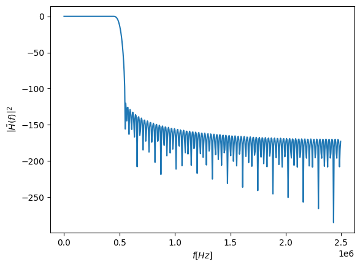

import numpy as np
import matplotlib.pyplot as plt
import scipy.signal as sig
import scipy.fft as fft
def plot_filter(filter_taps, fs):
w,h = sig.freqz(filter_taps, fs=fs)
plt.figure()
plt.plot(w,20*np.log10(np.abs(h)**2))
plt.xlabel('$f [Hz]$')
plt.ylabel(r'$\left|\tilde{H}\left(f\right)\right|^{2}$')
plt.show()
seed = 123
rng = np.random.default_rng(seed)
N = 10000
A = 1
fs = int(5e6)
t_axis = np.arange(N)/fs
n_t = rng.uniform(-A,A,N) + 1j*rng.uniform(-A,A,N)
plt.figure()
plt.plot(sig.correlate(n_t,n_t))
C:\Users\yoavp\Documents\projects\python_venvs\jupyter-book\lib\site-packages\matplotlib\cbook.py:1762: ComplexWarning: Casting complex values to real discards the imaginary part
return math.isfinite(val)
C:\Users\yoavp\Documents\projects\python_venvs\jupyter-book\lib\site-packages\matplotlib\cbook.py:1398: ComplexWarning: Casting complex values to real discards the imaginary part
return np.asarray(x, float)
[<matplotlib.lines.Line2D at 0x1f79bcc3c70>]
plt.figure()
plt.psd(n_t, NFFT=1024, Fs=fs,sides="twosided")
(array([9.40659599e-08, 5.15053242e-08, 7.61131338e-08, ...,
9.51576323e-08, 1.43970864e-07, 9.44998108e-08]),
array([-2500000. , -2495117.1875, -2490234.375 , ..., 2485351.5625,
2490234.375 , 2495117.1875]))
fs = 5e6
f_nyq = fs/2
ripple_db = 60
trans_width = 100e3/f_nyq
cutoff_f = 0.5e6/f_nyq
N,beta = sig.kaiserord(ripple_db,trans_width)
filter_taps = sig.firwin(N, cutoff=cutoff_f, window=('kaiser', beta))
print(N)
183
plot_filter(filter_taps, fs)

plt.figure()
plt.plot(filter_taps)
[<matplotlib.lines.Line2D at 0x1f79f0ee2c0>]
n_filtered = sig.convolve(n_t, filter_taps, mode='same')
plt.figure()
plt.psd(n_filtered, NFFT=1024, Fs=fs,sides="twosided")
(array([2.76920115e-16, 1.41842206e-16, 4.80871874e-17, ...,
5.66631450e-17, 1.11015362e-16, 1.87589524e-16]),
array([-2500000. , -2495117.1875, -2490234.375 , ..., 2485351.5625,
2490234.375 , 2495117.1875]))
plt.figure()
plt.hist(n_t.real, bins=100)
plt.hist(n_filtered.real, bins=100)
(array([ 1., 0., 4., 1., 3., 1., 2., 4., 3., 4., 7.,
6., 7., 9., 12., 18., 22., 20., 35., 26., 33., 50.,
44., 46., 75., 70., 63., 92., 87., 108., 105., 121., 129.,
152., 169., 156., 164., 157., 166., 156., 226., 202., 195., 227.,
246., 251., 280., 278., 239., 265., 267., 223., 300., 275., 254.,
244., 270., 256., 240., 222., 210., 223., 184., 179., 186., 159.,
135., 139., 148., 118., 113., 106., 89., 92., 72., 71., 66.,
65., 42., 41., 51., 46., 34., 31., 20., 14., 17., 12.,
16., 9., 3., 1., 5., 1., 3., 2., 5., 0., 3.,
1.]),
array([-0.86951003, -0.85264301, -0.83577599, -0.81890897, -0.80204195,
-0.78517493, -0.76830791, -0.75144089, -0.73457387, -0.71770685,
-0.70083983, -0.68397281, -0.66710579, -0.65023877, -0.63337175,
-0.61650472, -0.5996377 , -0.58277068, -0.56590366, -0.54903664,
-0.53216962, -0.5153026 , -0.49843558, -0.48156856, -0.46470154,
-0.44783452, -0.4309675 , -0.41410048, -0.39723346, -0.38036644,
-0.36349942, -0.3466324 , -0.32976538, -0.31289836, -0.29603134,
-0.27916432, -0.2622973 , -0.24543027, -0.22856325, -0.21169623,
-0.19482921, -0.17796219, -0.16109517, -0.14422815, -0.12736113,
-0.11049411, -0.09362709, -0.07676007, -0.05989305, -0.04302603,
-0.02615901, -0.00929199, 0.00757503, 0.02444205, 0.04130907,
0.05817609, 0.07504311, 0.09191013, 0.10877716, 0.12564418,
0.1425112 , 0.15937822, 0.17624524, 0.19311226, 0.20997928,
0.2268463 , 0.24371332, 0.26058034, 0.27744736, 0.29431438,
0.3111814 , 0.32804842, 0.34491544, 0.36178246, 0.37864948,
0.3955165 , 0.41238352, 0.42925054, 0.44611756, 0.46298458,
0.47985161, 0.49671863, 0.51358565, 0.53045267, 0.54731969,
0.56418671, 0.58105373, 0.59792075, 0.61478777, 0.63165479,
0.64852181, 0.66538883, 0.68225585, 0.69912287, 0.71598989,
0.73285691, 0.74972393, 0.76659095, 0.78345797, 0.80032499,
0.81719201]),
<BarContainer object of 100 artists>)
def papr(x):
x = np.abs(x)
return x.max()/np.sqrt(np.mean(np.abs(x)**2))
papr(n_t), papr(n_filtered)
(np.float64(1.729782278026633), np.float64(2.6251925201021638))